Juniper

Issue #58
Issue #61 · same IDSame base IDs, default pose, no hats/glasses/accessories, same accent palette. Left: original Issue #58 SVG. Right: Issue #61 preferred-look SVG. Juniper’s expression, Maple’s short dog ears and Bandit’s round raccoon ears show the new delta without relying on recolors.

Issue #58
Issue #61 · same ID Issue #58
Issue #58Existing avatars and original home art are preserved. This sheet shows a refinement of previously authored bases, not three newly counted characters.